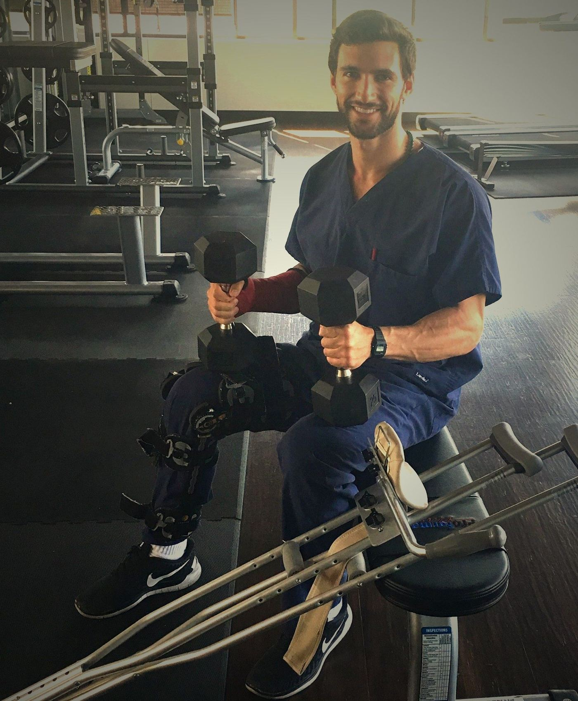

The Loss
Anthony Balduzzi lost his father at age nine. He was forty two. That single event cracked open a boy's world and set him on a lifelong search for what holds a man together when everything breaks.
The Building
The pain became fuel. Anthony threw himself into physical training, competitive bodybuilding, and the relentless pursuit of control over his body. He became a naturopathic medical doctor. He built the Fit Father Project and Fit Mother Project into multi million dollar health companies serving tens of thousands of families. From the outside, it looked like success. On the inside, the wound that drove it all was still running.

The Breaking
On a ski slope, Anthony ignored an intuition to slow down. He hit a tree at full speed. Shattered leg. Broken arm. Nearly died. That accident set off a decade of reconstruction; seven surgeries, a leg lengthening procedure, and the slow unraveling of the ego that had been built to outrun the pain.

The Descent
Through ten years of recovery, Anthony learned to sit with pain instead of running from it. He learned meditation. He learned to forgive. He began to see the energy running his personality for what it was. The man who had built everything to feel safe began to let it all go.

The Fire
Anthony went to the Amazon and drank ayahuasca. He sat in total darkness for a week. He found God. Not the God he was taught about, but a direct, personal, felt communion with Creator. The through line became clear; every breaking was a doorway. Every loss was an initiation. Every surrender built the man who could now hold space for other men's transformation.

The Return
Anthony became a father. His heart broke open again in the most beautiful way. He understood his own father's love for him. Then his marriage ended, and he surrendered into that too. Every opening brought him closer to center.

The Center
Today, Anthony works one on one with men who are ready to wake up. Through physical training, spiritual ceremony, plant medicine, time in nature, and deep relational work, he helps men reconnect to their bodies, find their direct relationship with God, face their deepest fears, and align their entire lives around their sacred center. He plays the Native American flute by the fire while they journey inward. He holds space. And then he sends them home. Transformed, alive, and free.